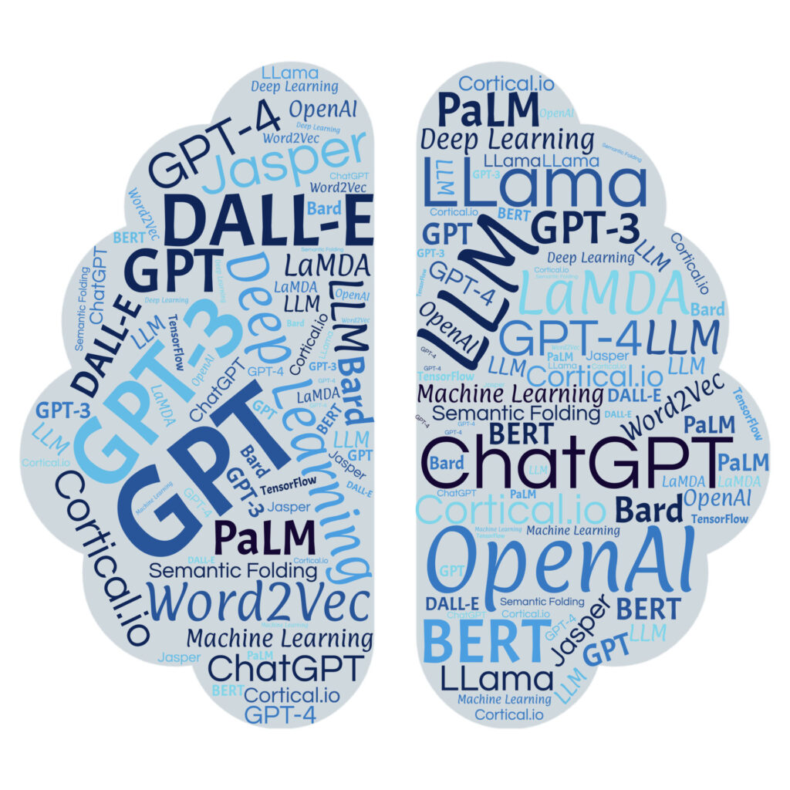

Large Language Models and Second Language Learning
Summary: This post considers how LLM-based tools may support interaction, individualized feedback, and engagement in language learning, while noting reliability and ethical limitations.

The integration of AI technology into language education has dramatically changed the face of Computer Assisted Language Learning (CALL) as a discipline. The emergence of new developments in LLMs, such as chat AI, has opened new avenues for interactive language learning environments that are capable of facilitating language learners to unprecedented levels. The potential of AI technology to boost the engagement of language learners with the language learning environment, seen through the use of AI technology such as ChatGPT, has been demonstrated through research studies.
From the perspective of Second Language Acquisition (SLA) , the strengths of LLM-based systems match well with a number of established theories of learning. For example, interactionist theories highlight the need for meaningful communication and feedback in language learning. LLM-based conversational systems make it possible for learners to participate in dialogue-based communication that approximates real communication, giving learners an opportunity to try out their hypotheses about language and get corrective feedback. Recent empirical studies have shown that LLM-based conversational systems can provide graduated corrective feedback and scaffold learner performance while communicating, helping learners to identify and correct their own errors in language use (Fincham & Arronte Alvarez, 2024) . This is similar to the process of scaffolding as outlined in sociocultural theory, specifically in Vygotsky’s idea of the Zone of Proximal Development.
Besides interaction, LLMs are also part of individualized learning processes, which are a core component of contemporary SLA models. Intelligent CALL systems are increasingly based on adaptive technologies that are able to adapt to the needs of individual learners. As recent studies on chatbots for language learning using LLMs have found, artificial intelligence can support adaptive learning environments that offer learners personalized learning activities, feedback, and support according to their performance and preferences (Panagiotidis, 2024) . This personalization allows learners to be exposed to input and practice activities that are adapted to their level of proficiency, which is especially important for successful language acquisition. Motivation and engagement are also essential components of SLA, and LLM-supported learning environments can have a positive impact on both. Research studies on ChatGPT as a CALL application have found that learners' self-reported enjoyment, curiosity, and immersion are important factors influencing their intention to use AI applications for language learning (Qu & Wu, 2024) . These results are consistent with general findings in SLA research, which have highlighted the importance of affective components, such as motivation and interest, for successful language acquisition.
Although LLMs hold great promise in terms of their pedagogical potential, they also pose significant challenges in the context of language learning tools. Questions of accuracy, hallucinated responses, and ethics need to be addressed before these tools can be fully incorporated into the classroom. However, the potential of LLMs to offer personalized interaction, adaptive feedback, and constant practice in language use may indicate that they could form the core of next-generation CALL systems. By matching the capabilities of technology with the theories of SLA, researchers and educators may gain a better understanding of how these tools could be used to facilitate language acquisition in both classroom and self-directed learning environments.